Sun
The big cook-upLunch31 g
Dinner46 g
Savoury13 g
Sweet12 g
Tap a meal for the method · weekly staple
Every method in one place
Reach for these
The difference between a plan you follow and food you want is almost always one dried spice and one raw green thing. Two rules underneath the table: acid at the end, not the start — lemon in the pan cooks flat. And never stir soft herbs in; they go khaki. On top, at the table.
| Chicken thigh — seared | cumin, smoked paprika, lime, coriander raw at the end |
| Chicken — creamy Tuscan | oregano, garlic, sun-dried tomato and the oil from its jar, lemon last |
| Peanut dressing | soy, sesame oil, lime, honey, raw garlic, chilli — loosen with warm water |
| Green chile + cheddar | cumin, coriander stems, lime, a little smoked paprika |
| Eggs — scrambled, for batching | underdone, salt late, chives or coriander raw |
| Potato — diced and browned | cumin, paprika, oregano — and real heat, which is the actual seasoning |
| Tomato + feta, roasted | chilli flakes, whole unpeeled garlic, lemon zest, basil or parsley raw |
| White beans | bay, oregano, garlic, their own starchy cooking water |
| Banana, baked | cinnamon, dark chocolate, a pinch of salt — black bananas mean no added sugar at all |
| Cabbage — raw slaw | lime, sesame, chilli — dressed at the table, never in advance |
| Rice — fried | garlic, white pepper, sesame, soy down the side of the hot pan |
| Focaccia | fennel seed and sea salt, or za’atar — rotate it weekly |
Five sessions · Technogym floor · no Friday
| Mon | 40 min | |
| Tue | 45 min | |
| Wed | 40 min | |
| Thu | 42 min | |
| Fri | Rest | — |
| Sat | 45 min | |
| Sun | Rest | — |
Everything gets trained twice a week — once on its own day and again in Saturday’s upper session. That is the point of the split: muscle protein synthesis runs about 48 hours, so twice catches a second wave that once does not. Friday and Sunday are the rest days, and they are real ones, not optional. Monday to Thursday runs four straight, which is fine because no two consecutive days train the same muscle as the primary. Abs land Tuesday and Thursday. The three machines you actually live on — Vertical Traction (their pulldown), Low Row and the Abdominal Crunch — are the spine of Tuesday, Thursday and Saturday, so the week is built around what you are already using rather than around what a programme thinks you should.
Order is deliberate. Heaviest compound while you are fresh, isolation after. Do not reshuffle it to get on a free machine — wait, or swap 03 and 04 only.


Start Handles level with upper chest, elbows back and below the wrists
End Arms nearly straight, pressed up and slightly in
01
Technogym Selection Pro · incline chest press
Technogym Chest Press — Selection 700 or 900
Seated, upright back pad, two independent lever arms with handles beside your chest, weight stack behind you. Most Technogym floors have no dedicated incline machine: use the standard chest press with the seat dropped to its lowest setting, which raises the handles relative to your chest and gives you the angle. Failing that, an adjustable bench at 30° with dumbbells in the Pure area.
Scan the QR on the machine console with the Technogym app for their own video of the movement.


Start Handles at mid-chest, shoulder blades pinned back and down
End Arms extended forward, short of lockout
02
Technogym Selection Pro · chest press
Technogym Chest Press — the same machine as 01
Raise the seat so the handles line up with the middle of your chest. Same machine, one pin change, completely different emphasis. Do not go and queue for a second one.
Scan the QR on the machine console with the Technogym app for their own video of the movement.
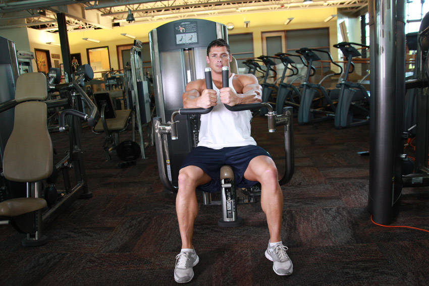

Start Arms wide, elbows soft and fixed at that angle
End Pads touching in front, squeezed for a full second
03
Technogym Selection Pro · pectoral machine (pec deck)
Technogym Pectoral Machine — often a combined Pectoral / Rear Delt
The giveaway is the arms: vertical pads you press with your forearms, not handles you push with your hands. If it has handles pointing forward you are at the chest press. If it is the combined pec/rear-delt version, the arms have to be swung round to the front position before you sit down.
Scan the QR on the machine console with the Technogym app for their own video of the movement.

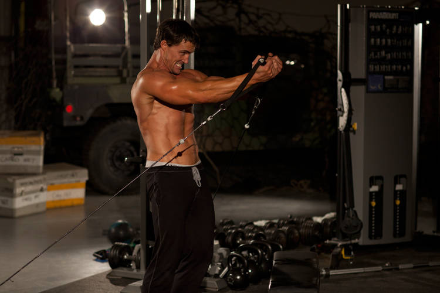
Start Pulleys at the bottom, arms down and out, one foot forward
End Hands together around collarbone height
04
Technogym Pure · dual adjustable pulley, both arms set low
Technogym Dual Adjustable Pulley, cable station, or Kinesis
Two tall uprights with a carriage that slides up and down and a D-handle on each cable. Slide both carriages to the bottom. If your gym has the wall-mounted Kinesis, that works too and the cables move more freely.
Scan the QR on the machine console with the Technogym app for their own video of the movement.

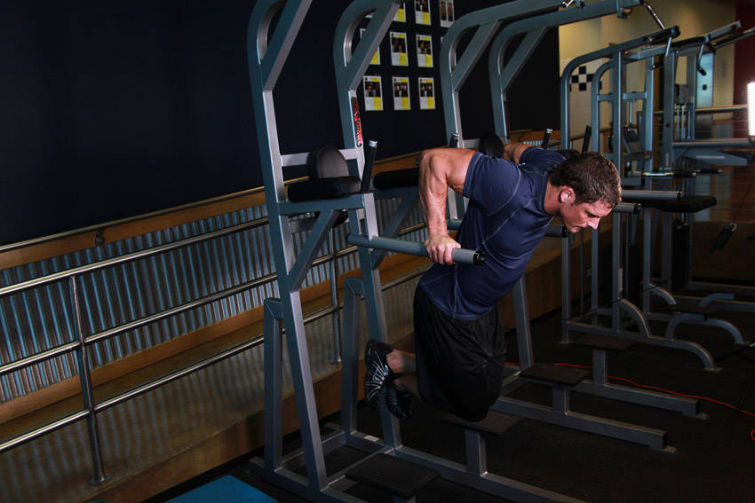
Start Arms straight on the bars, chest leaning forward over the hands
End Lowered until upper arms are parallel to the floor
05
Technogym Selection Pro · assisted chin/dip
Technogym Selection Assisted Chin / Dip
Tall frame, pull-up bar on top, dip bars at waist height, and a padded platform for your knees or feet. The stack takes weight off you rather than adding it, so a higher number is more help, not less — that is backwards from every other machine here and it catches everyone out once.
Scan the QR on the machine console with the Technogym app for their own video of the movement.
General training guidance, not coaching. Sharp pain in the shoulder joint means stop, not push through.
Every set on the cable station. Five exercises, one machine, three attachments — you move the carriage up or down and swap rope for bar. Nothing to queue for and no walking between sets, which is most of why this fits in 40 minutes. The cable also holds tension where free weights lose it, at the top of a curl and the bottom of a pushdown, which is exactly where arms do their work.


Start Rope at chest height, elbows tight to the ribs
End Arms straight, rope split apart at the thighs
01
Rope on the high pulley
Technogym Dual Adjustable Pulley · cable station. Rope attachment, carriage at the top. Elbows pinned to your ribs and kept there — the second they drift forward it becomes a shoulder movement.
Scan the QR on the machine console with the Technogym app for their own video of the movement.


Start Arms down, cable already under tension
End Curled to shoulder height, elbows still at the sides
02
Straight or EZ bar on the low pulley
Technogym Dual Adjustable Pulley · cable station. Carriage all the way down, bar attachment. Stand a pace back from the column so there is tension on the cable before you even start.
Scan the QR on the machine console with the Technogym app for their own video of the movement.
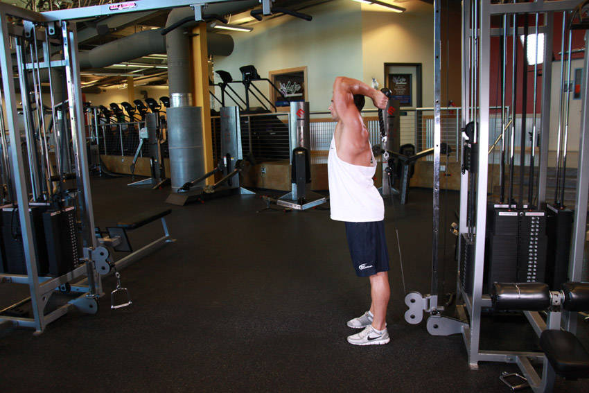

Start Rope behind the head, elbows bent and high
End Arms straight overhead, elbows still forward
03
Rope on the low pulley
Technogym Dual Adjustable Pulley · cable station. Face away from the machine, rope over your shoulders, elbows pointing forward at the ceiling.
Scan the QR on the machine console with the Technogym app for their own video of the movement.


Start Arms down, palms facing each other
End Curled to the shoulders, palms still facing in
04
Rope on the low pulley
Technogym Dual Adjustable Pulley · cable station. Rope attachment, neutral grip, thumbs up the whole way and never rotating.
Scan the QR on the machine console with the Technogym app for their own video of the movement.

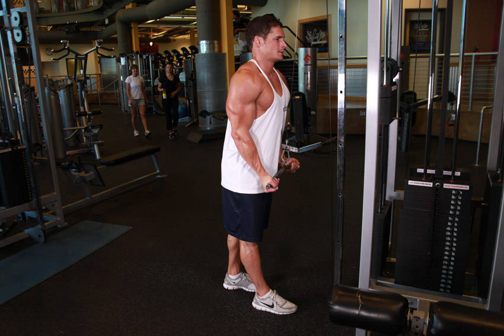
Start Bar at chest height, underhand grip
End Arms straight down, wrists neutral
05
Straight bar on the high pulley
Technogym Dual Adjustable Pulley · cable station. Same setup as 01 with an underhand grip on a straight bar. Two sets to finish, nothing heavy.
Scan the QR on the machine console with the Technogym app for their own video of the movement.
General training guidance, not coaching. Sharp pain in a joint means stop, not push through.
Four of these five are loaded and that is deliberate. Abs are muscle and they grow the same way everything else does — by getting harder over time. Endless bodyweight crunches stop working the moment you can do forty. Start with the hardest movement and finish braced against a cable that is trying to twist you.
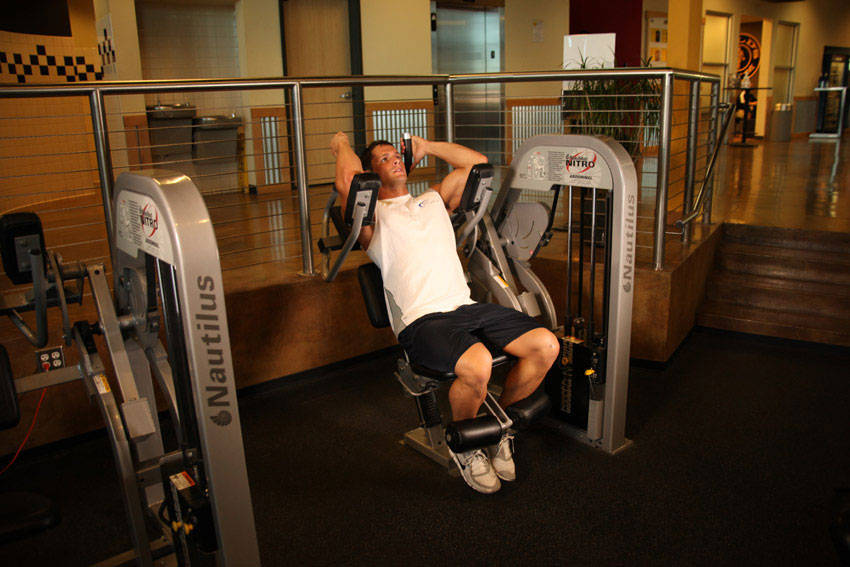

Start Upright, chest against the pad
End Crunched forward, ribs towards hips
01
Technogym Selection Abdominal Crunch
Seated, chest pad across the front, feet hooked. Loaded from a stack so you can measure progress.
Scan the QR on the machine console with the Technogym app for their own video of the movement.


Start Kneeling tall, rope at the ears
End Elbows driven to the thighs, spine rounded
02
Technogym cable station, rope on the high pulley
Kneel facing the machine, rope beside your ears, hips fixed.
Scan the QR on the machine console with the Technogym app for their own video of the movement.
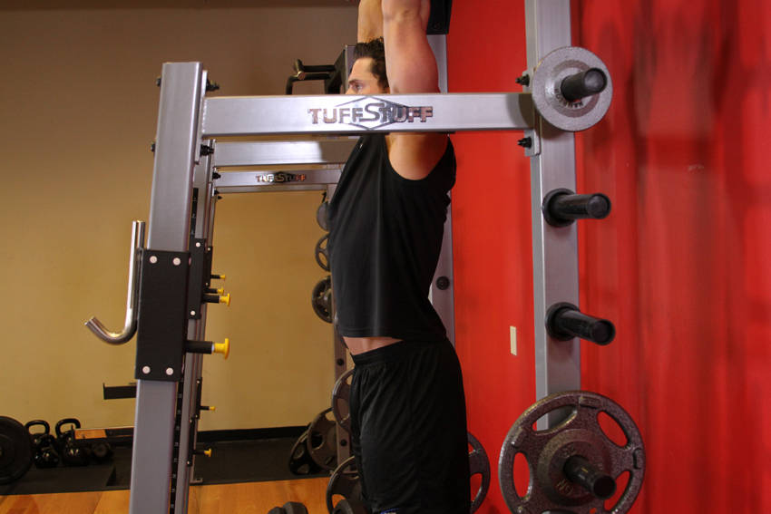

Start Hanging straight, shoulders packed down
End Knees up past the hips, pelvis curled under
03
Technogym Selection Assisted Chin / Dip, or a captain’s chair
Use the dip bars with your back against the pad, or hang from the bar above if your grip holds.
Scan the QR on the machine console with the Technogym app for their own video of the movement.
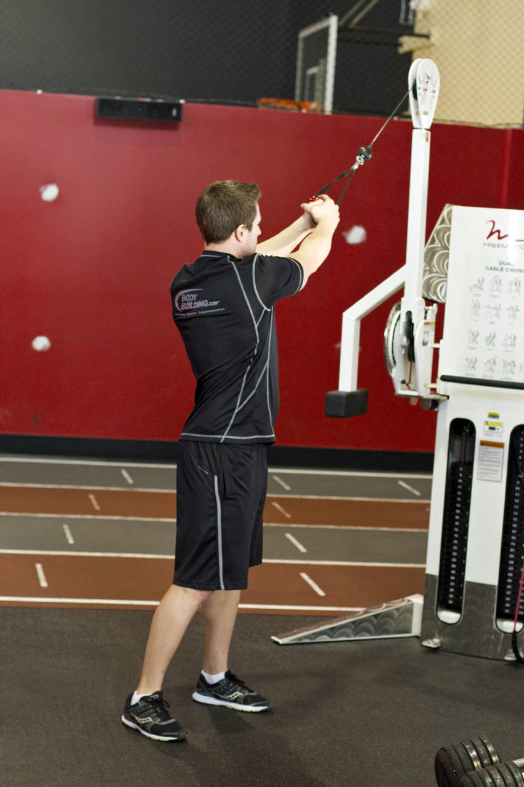

Start Handle high and across, arms extended
End Pulled down to the opposite hip, torso rotated
04
Technogym Dual Adjustable Pulley, handle set high
Pull down and across the body, rotating through the ribs and letting the back foot pivot.
Scan the QR on the machine console with the Technogym app for their own video of the movement.
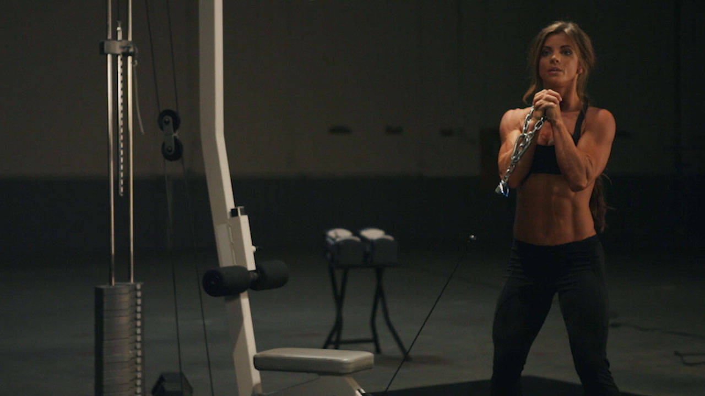

Start Handle at the chest, stood side-on to the machine
End Arms pressed straight out, torso refusing to rotate
05
Technogym Dual Adjustable Pulley · handle at chest height
Stand side-on to the column, feet shoulder width, handle clasped in both hands at the sternum. Step away until the cable is properly loaded.
Scan the QR on the machine console with the Technogym app for their own video of the movement.
General training guidance, not coaching. Sharp pain in a joint means stop, not push through.
Wide first, then narrow, then straight-arm. Three pulldown variations is not repetition — the grip changes which part of the lat does the work, and the straight-arm version is the only one your biceps cannot help with. Face pulls at the end are the insurance policy for every chest press you do the rest of the week.


Start Arms overhead, shoulder blades lifted
End Bar at collarbone, elbows down by the ribs
01
Technogym Selection Vertical Traction — their lat pulldown
Seated, thigh pad clamped down, wide overhand grip.
Scan the QR on the machine console with the Technogym app for their own video of the movement.


Start Arms extended, shoulder blades forward
End Handle at the ribs, blades squeezed back
02
Technogym Selection Low Row, or the seated cable row
Chest against the pad if there is one, feet braced.
Scan the QR on the machine console with the Technogym app for their own video of the movement.


Start Arms overhead on the V-handle
End Handle at the upper chest, elbows down and back
03
Technogym Vertical Traction, V-handle
Same machine as 01 with a narrow V-handle instead of the wide bar.
Scan the QR on the machine console with the Technogym app for their own video of the movement.


Start Rope at eye height, arms straight and forward
End Rope at the thighs, arms still straight
04
Rope on the high pulley · Technogym Dual Adjustable Pulley · cable station
Stand back from the column, rope at eye height, arms locked straight the whole set.
Scan the QR on the machine console with the Technogym app for their own video of the movement.


Start Rope at eye height, arms extended
End Hands beside the ears, elbows high and wide
05
Rope on the high pulley · Technogym Dual Adjustable Pulley · cable station
Rope just above eye height, pull towards your forehead with the elbows flaring high and wide.
Scan the QR on the machine console with the Technogym app for their own video of the movement.
General training guidance, not coaching. Sharp pain in a joint means stop, not push through.
One press, then four raises. The press is the only heavy movement here; everything after it is light and high-rep, because delts are small and respond to volume rather than load. Side delts get two exercises because they are what make shoulders look wide and a press barely touches them.
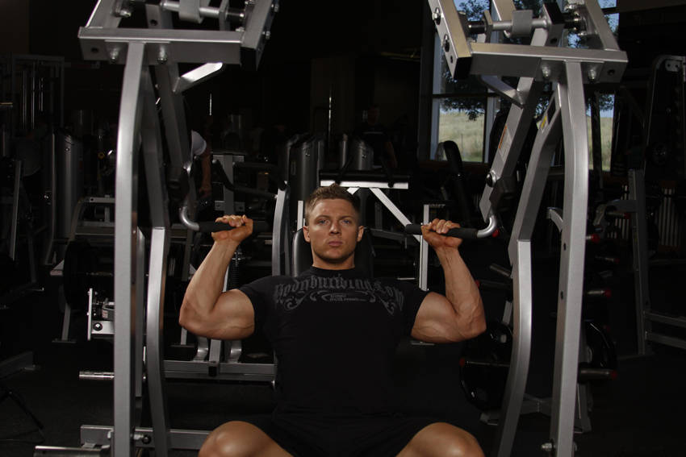
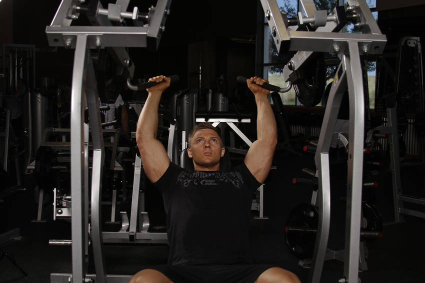
Start Handles at ear height, elbows under wrists
End Arms extended overhead, short of lockout
01
Technogym Selection Shoulder Press
Seated, back flat against the pad, handles starting at ear height.
Scan the QR on the machine console with the Technogym app for their own video of the movement.


Start Arm down across the body, cable loaded
End Arm out to the side at shoulder height
02
Single handle on the low pulley · Technogym Dual Adjustable Pulley · cable station
Stand side-on, cable running across the front of your body, handle in the far hand.
Scan the QR on the machine console with the Technogym app for their own video of the movement.


Start Dumbbells at the thighs, elbows soft
End Arms out to shoulder height, elbows still soft
03
Dumbbells · Technogym Pure rack
Both arms at once, very light, standing tall.
Scan the QR on the machine console with the Technogym app for their own video of the movement.


Start Arms crossed in front, cables under tension
End Arms swept wide and back, blades squeezed
04
Both handles, pulleys at shoulder height, cables crossed · Technogym Dual Adjustable Pulley · cable station
Stand in the middle, grab the opposite handle in each hand so the cables cross in front of you.
Scan the QR on the machine console with the Technogym app for their own video of the movement.
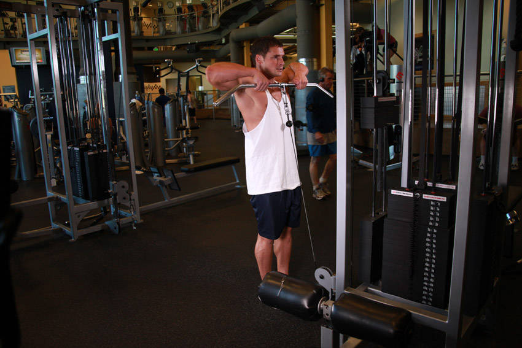

Start Bar at the thighs, arms straight
End Bar at chest height, elbows level with the shoulders
05
Straight bar on the low pulley · Technogym Dual Adjustable Pulley · cable station
Bar at thigh height, hands about shoulder width — not narrow.
Scan the QR on the machine console with the Technogym app for their own video of the movement.
General training guidance, not coaching. Sharp pain in a joint means stop, not push through.
No legs. Pull, push, pull, press, then six sets of arms to finish on the cable station. Biggest movements first, and nothing trained twice in a row. Use this on a day you only get one session in.
Start Arms overhead, shoulder blades lifted
End Bar at collarbone, elbows down by the ribs
01
Technogym Selection Vertical Traction — their name for the lat pulldown
Seated, thigh pad down, wide overhand grip.
Scan the QR on the machine console with the Technogym app for their own video of the movement.
Start Handles at mid-chest, elbows back
End Arms extended forward, short of lockout
02
Technogym Chest Press — Selection 700 or 900
Seat set so the handles line up with mid-chest.
Scan the QR on the machine console with the Technogym app for their own video of the movement.
Start Arms extended, shoulder blades forward
End Handle at the ribs, blades squeezed back
03
Technogym Selection Low Row, or the seated cable row
Chest against the pad if the machine has one, or feet braced on the plate.
Scan the QR on the machine console with the Technogym app for their own video of the movement.
Start Handles at ear height, elbows under wrists
End Arms extended overhead, short of lockout
04
Technogym Selection Shoulder Press
Seated, back flat, handles starting at ear height.
Scan the QR on the machine console with the Technogym app for their own video of the movement.
Start Arms down, cable under tension
End Curled to shoulder height, elbows fixed
05
Bar on the low pulley · Technogym Dual Adjustable Pulley · cable station
Carriage down, stand a pace back so the cable is loaded before you start.
Scan the QR on the machine console with the Technogym app for their own video of the movement.
Start Rope at chest height, elbows tight
End Arms straight, rope split at the thighs
06
Rope on the high pulley · Technogym Dual Adjustable Pulley · cable station
Same station, carriage to the top, rope attachment.
Scan the QR on the machine console with the Technogym app for their own video of the movement.
General training guidance, not coaching. Sharp pain in a joint means stop, not push through.
Four batches · the whole week in one afternoon
This is a bigger Sunday than usual — four batch dishes plus two bakes — but it buys you a week with almost no weekday cooking. Order matters more than it has before, because the oven has to go up and down and two things need soaking first.
Focaccia dough needs three hours. Put the oil in it this time. Then quick-soak the chickpeas and the cannellini in separate pots: cover, hard boil five minutes, off the heat, stand an hour.
Four bananas mashed, fifth split for the top. No butter and no oil — yoghurt and banana do that job. 170 °C for a full hour, foil over at forty minutes if it browns early. Five bananas is a lot of moisture and a hot oven sets the outside while the middle stays raw.
Diced small, in oil, in a wide pan on the cooktop. Fifteen minutes to properly crisp. The oven is busy and this is the long cooktop job, so they overlap neatly.
Both pots 45–50 minutes until tender but holding shape. Keep a cup of the bean water — it is what stops the Tuscan sauce being a thin cream slick. Wet hand on the dough, not floured.
Diced small, fifteen minutes, properly crisp at the edges. Then onion, chiles, spice. Scramble the eggs soft and underdone; they cook again on reheating. Then let it all go completely cold before you roll anything — warm filling steams the wrap and you get eight soggy burritos.
Browned in batches, never crowded. Onion, garlic, sun-dried tomatoes in the chicken fat, cream, reduce, then beans and their water. Spinach off the heat at the very end. Cooked in, it goes khaki and waters down everything you just reduced.
Sear the 750 g of thigh, cook the rice and spread it on a tray to cool fast. Assemble the six bowls dry: rice, chicken, raw cabbage and carrot. Nothing gets dressed. Dressed slaw is limp inside a day and that is the whole reason these keep four days.
Heaps of oil in the tray. Oiled fingers, press through to the base. Rotate the topping this week — fennel seed and sea salt, or za’atar. Twenty-two minutes.
100 g feta, 100 g yoghurt, lemon, pepper, oil, blitzed until completely smooth. If it is still grainy it eats like crumbled cheese and the point is lost.
The oven only goes up now: 170 for the banana bread, then 220 for the focaccia. Dropping the pumpkin loaf took a whole temperature step out of the afternoon, and about an hour of oven time with it. Everything else is cooktop and happens around the dough proving.
Twenty-six portions, seven days
Almost all of this is cooked today, so the real work is portioning it correctly before you sit down. Four days is the limit on cooked egg and cooked chicken; anything later than Wednesday goes in the freezer tonight.
Split the 2 kg of thigh three ways: 1 kg out for the Tuscan, 750 g out for the bowls, and 250 g straight to the freezer for Wednesday’s quesadillas. Three days raw in the fridge is the limit and Wednesday is past it.
Wrapped individually. Four to the fridge for Sunday, Tuesday; four to the freezer for Thursday and Saturday. From the fridge they are 8 minutes in the air fryer; from frozen, 25 at 170 °C.
Two eaten tonight, two to the fridge for Monday, two to the freezer for Friday. Six days in the fridge would be well past it.
All six assembled and lidded, dressing separate. They are Monday, Wednesday and Friday lunches.
Focaccia cut into 12, half fridge half frozen. Banana bread cools completely before it is cut — a fat-free loaf cut hot tears and goes gummy. Ten slices is one each a day for five days, and it stales faster than a buttered loaf, so slice and freeze from Wednesday and toast it from frozen.
Wednesday’s quesadilla chicken is already eaten by then — nothing to move. Take the last focaccia out of the freezer for Friday’s Tuscan.
Twenty-six batch portions against twenty-eight slots. Saturday’s dinner is deliberately undefined: whatever is left, fried rice. If the fridge has given you nothing with protein in it, add two eggs or a tin of beans rather than eating a bowl of rice.
The rule underneath all of this: cooked dishes get eaten within about three days or they get frozen, and anything frozen thaws in the fridge overnight rather than on the bench. For actual times and temperatures, Food Standards Australia New Zealand rather than a meal plan.
Sunday · one trip · batch-cook week
A different shape of week: four batch dishes cooked Sunday, then rotated, rather than seven separate dinners. Twenty-six portions against twenty-eight lunch-and-dinner slots for the two of you, and Saturday’s fridge-clear is the gap. Prices are rough shelf prices, not specials. The pantry block at the bottom is what I have assumed you already have — check the chickpeas and cannellini before you leave, they are the two that stop the week working.
18–24 October · 21 lines · no lentils
Rice, pasta, plain flour, dry yeast, dried chickpeas (400 g cooked goes in the pasta), dried cannellini (250 g for the Tuscan), olive and sesame oil, soy, honey, butter, brown sugar, baking powder, protein powder, oats, and the spice shelf — cumin, smoked paprika, oregano, chilli flakes, cinnamon, mixed spice. The two dried legumes are the only ones worth physically checking, because both need soaking on Sunday morning and there is no recovering from finding the bag empty at midday.
Protein averages 93 g each a day — 106 on the Tuscan nights, 76 on the two pasta nights. A spoon of yoghurt or a boiled egg on pasta night closes that gap. The banana bread replaced the pumpkin loaf: 209 calories and 2.6 g of fat a slice instead of 343 and 14 g, and more protein than either.
For next week’s plan
Anything you want changed, added or dropped. Write it as it occurs to you — mid-cook, in the aisle, after dinner — and it will be waiting when the next plan gets built.
Shells only — no logic yet
For meals outside the weekly plan — a birthday dinner, guests on the weekend. Kept separate so they never disturb the shop or the Sunday sequence.
To wire: store against a date, flag whether its ingredients merge into that week's shop or stay separate, surface it on the day it falls.
Photograph what's actually on the shelf, get back a recipe that uses it. Aimed at the Thursday problem — half a cabbage, three eggs, some rice, no idea.
Take a photo or drop an image
JPG / PNG · fridge shelf, bench, pantry
To wire: identify ingredients from the image, cross-check against what the plan says should still be in the fridge, rank by what expires soonest.
Page updated — · pull down to refresh